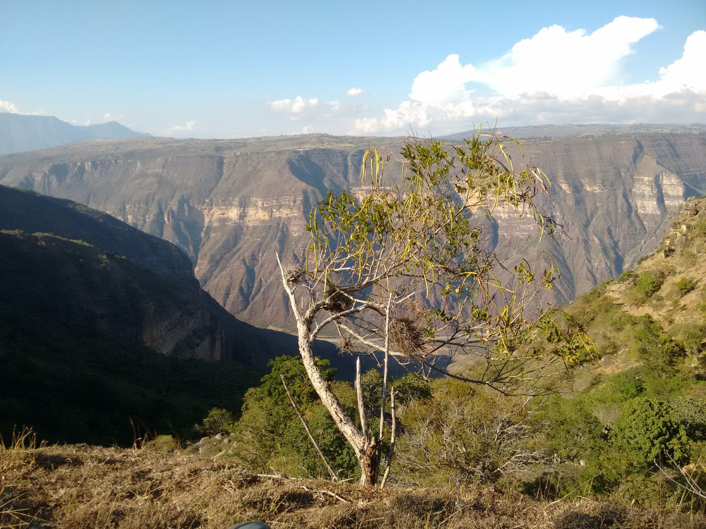

Los Santos 87ptsSCA
Mesa de los Santos
Borde del Cañón
Durazno, miel de caña y final floral.
Tueste medio claro · frutal
$56.000Bolsa 340 g · grano

Los Santos 87ptsMesa de los Santos
Durazno, miel de caña y final floral.
Tueste medio claro · frutal
$56.000Bolsa 340 g · grano